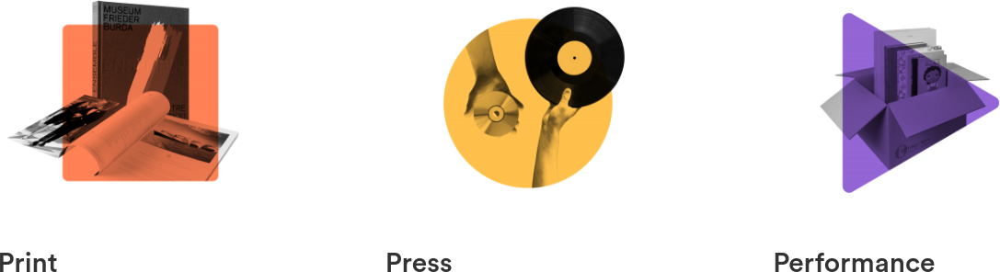

Presentation about my company
Contents:
-
Index
-
Introduction
-
About Me
-
About optimal media
4.1 General Information
4.2 Our security arrangements
4.3 Our IT-Infrastructure
-
About my tasks
-
Outro
1. Introduction
This is a Presentation about my company optimal media. I hope you enjoy the lecture and if there are any questions, just raise the hand and ask :)
2. About Me
I am Jamie Alexander Helmke, an apprentice at optimal media in Röbel. I am learning the profession of "IT specialist for system integration".
3. About optimal media
The 'optimal media GmbH', with its head office in Röbel/Müritz, is a subsidiary of the 'EDEL SE & Co. KGaA'.
3.1 General Information
Our slogan: Print. Press. Performance.
We print books, magazines, brochures, catalogs, annual reports, and media printing and packaging.
We press records, CDs, DVDs and Blu-Ray discs and do extensive studio work.
We perform logistics and fulfillment and take care of the distribution of the product.

Maybe you already know the company, some of our customers are probably familiar to you:
Universal Music Group: Stevie Wonder, Imagine Dragons, Demi Lovato, Elton John, Ariana Grande, Post Malone, ABBA, Helene Fischer, Eminem, Nirvana, Shawn Mendez, Rolling Stones, Queen, King & Prince, Bob Marley. Justin Bieber, Frank Sinatra, Lady Gaga, Daddy Yankee, Lana Del Rey, Jon Batiste, Linong Chen, Amy Winehouse, Katy Perry, Blackpink, Capital Bra, Taylor Swift, Maroon 5, Moneybagg Yo, Pop Smoke, The Weeknd, Jonas Brothers, Drake, Marvin Gaye

Warner Music Group: Ed Sheeran, Robin Schulz, Coldplay , Lizzo, Capo, Stormzy, Provinz, Rita Ora, A boogie wit da hoodie, Martin Kohlstedt, Anne-Marie
DISTANZ Verlag: Books on modern art, photography, architecture and design.
3.2 Our security arrangements
Access to the offices and server rooms is only via RFID cards. Due to this, we have a lot of electronic door locks, especially for very important areas of the company. Digital access is only granted if you have an authorize "Active Directory Account" with enough rights. Direct access to the ERP system from outside is not possible.
3.3 Out IT Infrastructure
As i said, we have an ERP System (Enterprise Resource Planning) which simply manages personnel and their resources, communication and information.
But we also have an CRM System (Customer Relationship Management) which maintains the relationship with our customers and reveals a lot to them about production.
We have 2 server rooms at once due to space and fire protection.
We have a class A Network in our company.
In 2018, fire broke out in one of the server rooms as a result of a defective UPS (USV). So check your UPS system regularly, always have surveillance cameras and at least one smoke detector in server rooms and don't put your UPS batteries in the same room as your servers! The smell of burning material can still be noticed today.
4. About my tasks
My permanent job is to maintain our workplace: printer repair, sorting delivery bills, patching network sockets, setting up and maintaining our workstations. But sometimes i don't have routine: I have to repair phones, special devices, testing and mounting cameras, and much more.
When that's done, which it usually is, I often keep myself busy. I deal with free unixoid operating systems like GNU/Linux based OSs or the less known BSDs. In general, I am fascinated by the topic of "Free and Open Source Software". The advantage of working with FOS software is that you can often learn and understand more than with their proprietary competitors. But free software is not always just an alternative; the web servers 'Apache' and 'nginx', for example, you use hundreds of times every day. They are the most widely used web servers of all time. You know the Text Editor 'Notepad++'? Also Open-Source. Or the GNU software OBS; do you know any screen capture software that is used even close that often?
I've gotten a little off topic: My activities.
Sometimes I get orders to write software myself. Software I have already written (or started writing) are our logon script, an online phonebook software and some exercises. I'm learning and getting better at writing software, and I'm also getting involved into the open source community. Therefore, all of my projects and presentations are under the MIT License in my GitHub Repository (github.com/jamieahelmke).
5. Outro
I often have much to do, just like you. I dont have that one exercise that i do, i am a little flexible. And also, most of the "Systemintegrator"-Apprentices are not writing software. Call to you: At least learn free software!
Questions?
Sources:
Anlage Allgemeine technische und organisatorische Maßnahmen nach Art. 32 DSGVO der optimal media GmbH
https://optimal-media.com